3.クライアントスクリプトを軽く動かしてみる
ここでは、いくつかのAPIを使用してみて、クライアントスクリプトではこういうことができるんだよというのを紹介します。
私がクライアントスクリプトを動かすまでに四苦八苦した流れを載せるので、結論ドーンいうわけではないことをご理解ください。
ここで作成したLuaファイルは、ダウンロードできるようにしておくので良ければ中身を見てみてください。
⭐UIを作ってみる
まず、何もない状態でいきなりUIをスクリプトで作るのは難しいので、UIの完成形を星々の幻境エディタの方で作ってみます。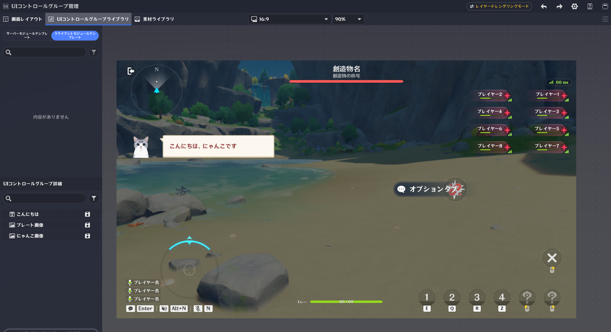
この、「こんにちは、にゃんこです」と喋ってる猫をスクリプトで作ります。
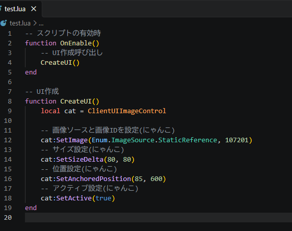
UI作成のファンクションを呼び出し、そこににゃんこの画像の設定をしてみました。
このファンクションは、スクリプトが有効になった時に呼び出されます。
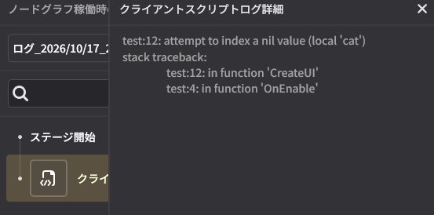
この状態で動かしてみると、エラーがでました。
ローカル変数「cat」が空ですよと言われています。
私は何もない状態からUIコントロールを作成できると思っていたのですが、
おそらくクライアントスクリプトは先に作成しておいたUIコントロールを後から編集できますよってことなんだと思います。
というわけで、先にクライアントモジュールのテンプレートを作成しておきます。
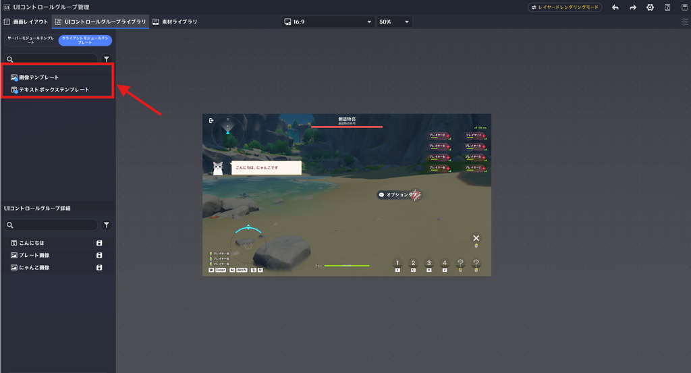
この画像テンプレートを作成→編集という形でやってみたいと思います。
画像テンプレートのインデックス：1073741860
テキストボックステンプレートのインデックス：1073741862
これは、指定したテンプレートインデックスから親UIコントロールの下にUIを作成するAPIです。
先ほど作成したテンプレートをさっそく作成してみます。
親コントロールはどうやって取得するのかですが、「script.object」を日誌で見てみたところスクリプトが紐づけられているUIコントロールが返ってきたのでこれを使用します。
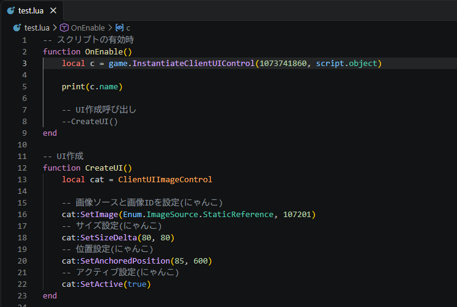
これで動くか試してみます。
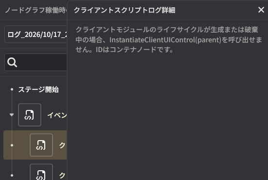
なんと、OnEnable()の中では、InstantiateClientUIControlは呼べないようです。
というわけでは、OnEnable()をOnStart()に書き換えて再度動かしてみます。画像が出ました！
まだ何も設定していない状態なので、「？」が表示されているのは正常な状態です。
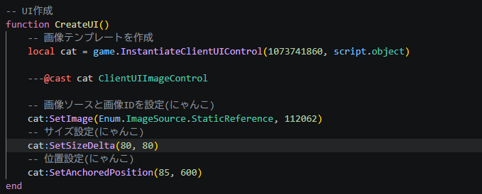
にゃんこの画像を設定してみます。
どこかにいなくなってしまいました……
SetAnchoredPosition(x, y)
親階層がない場合はキャンバスの左下を原点として位置を設定し、親階層がある場合は親階層の中心からの相対オフセットを設定します
親階層がある場合は、親階層の中心から相対オフセットを設定。
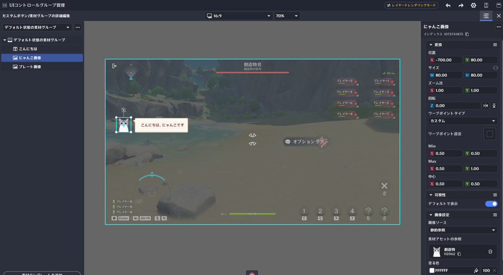
というわけで、カスタムボタンをクライアントモジュールコンテナのサイズに広げて、その中ににゃんこたちの画像を作成しました。
ここで確認できた相対オフセットや他の情報を設定します。
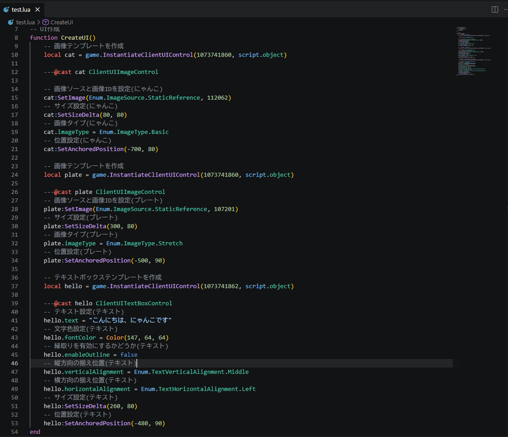
にゃんこ、プレート、テキストボックスすべて設定してきました。
これで動かしてみましょう。
というわけで、なんとかUIを作成することができました。
⭐カスタム変数を取得してみる
次に作るUIの完成はこんな感じです。
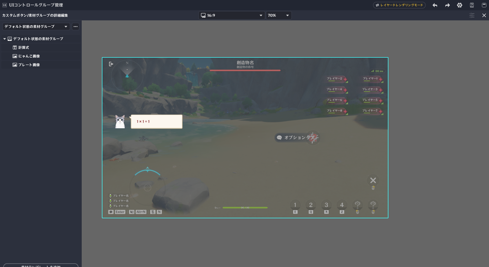
テキストボックスの中身を変更します。
計算式は、今はベタ書きされていますが、カスタム変数A × カスタム変数B の値を計算し、UIに表示します。
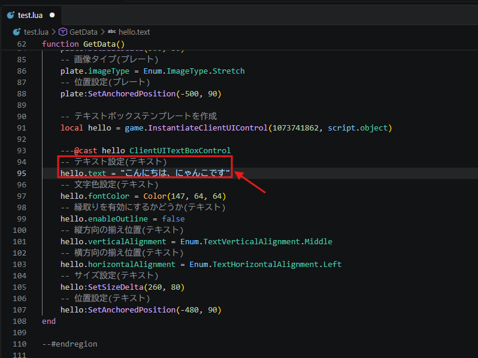
なので、今回変更するのはこの部分になりますね。
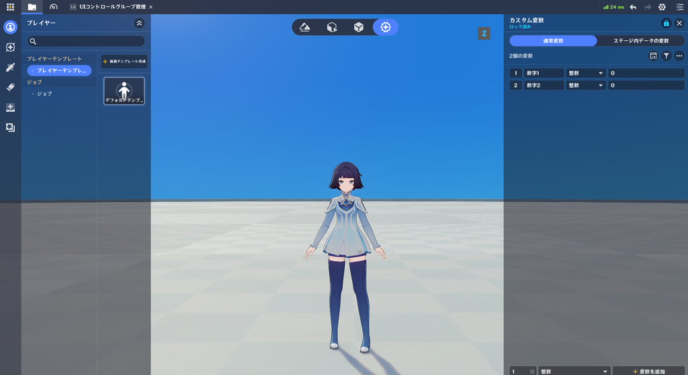
計算に使う2つのカスタム変数を星々の幻境エディタ側に作成しておきます。
今回はプレイヤーエンティティに作成しました。
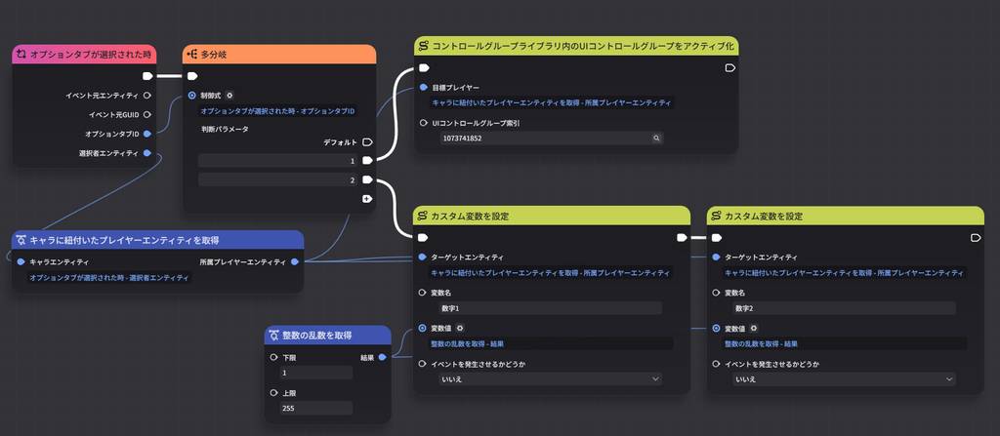
カスタム変数の中身は、オプションタブを押した時に更新されるようにします。
※これはサーバーノードグラフの方で編集
星々の幻境エディタ側の準備ができたので、VSCodeの方に移ります。
「game.GetGlobalCustomVariableValue(entityType: CustomVariableEntityType, customVariableName: string)」というAPIがあります。
カスタム変数を取得する時にはこれを使用します。
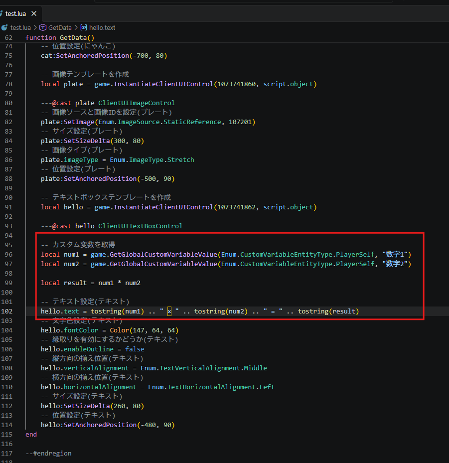
カスタム変数をそれぞれ取得し、取得した値を掛け算します。
その後は、「..」で文字列の結合をしてテキスト内容を完成させます。
※tostring()は文字列に型変換をしています。
※今までは、変数をUI上で横に並べることで文字列を結合しているように見せかけることしかできませんでしたが、クライアントスクリプトの導入で実際に文字列結合ができるようになりました！
これで動かしてみましょう。
思ったような形になっていますね。
今のままでは、計算処理は、コンテナノードが起動された1回しか動きません。
これを数値更新が行われる度にUIの中身も変更されるように修正してみましょう。
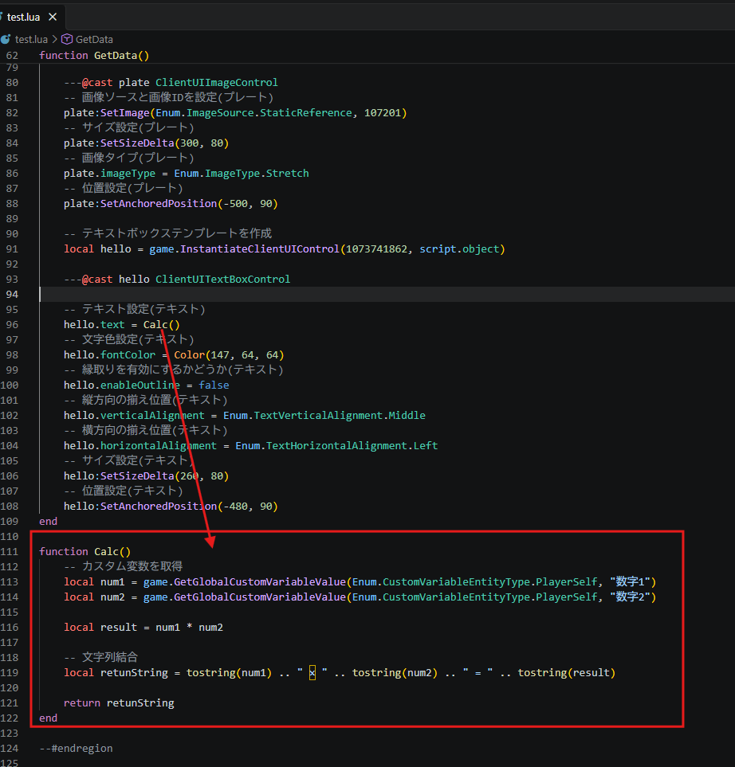
今回の計算処理～文字列結合する処理は、複数回呼ばれることになるのでその部分を関数として切り出しておきます。
何回も使用する処理を関数にしておくことで、同じ処理を何度も書く必要がなくなります。
そうすることで、コードの可読性をあげたり、コードを修正する際の修正漏れを防いだりと様々なメリットがあります。
これは、複合ノードと同じです。
サーバーノードに「カスタム変数が変化した時」というイベントノードがあります。
クライアントスクリプトでは、
「script:RegisterCustomVariableChangedHandler(entityType: CustomVariableEntityType, customVariableName: string, callback: fun(entityType: CustomVariableEntityType, customVariableName: string))」
というAPIがそれにあたります。
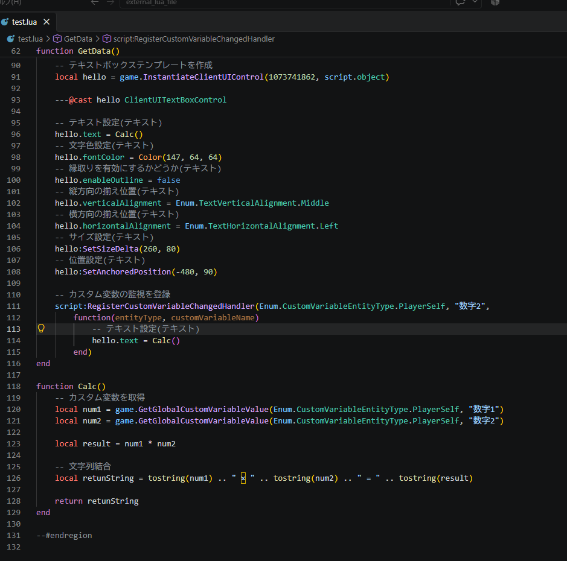
カスタム変数の監視を登録しました。
これで、「数字2」が変更される度に計算処理が動くようになりました。
星々の幻境でテストしてみましょう。
思った通りの動きになっていますね。
⭐アニメーションを作ってみる
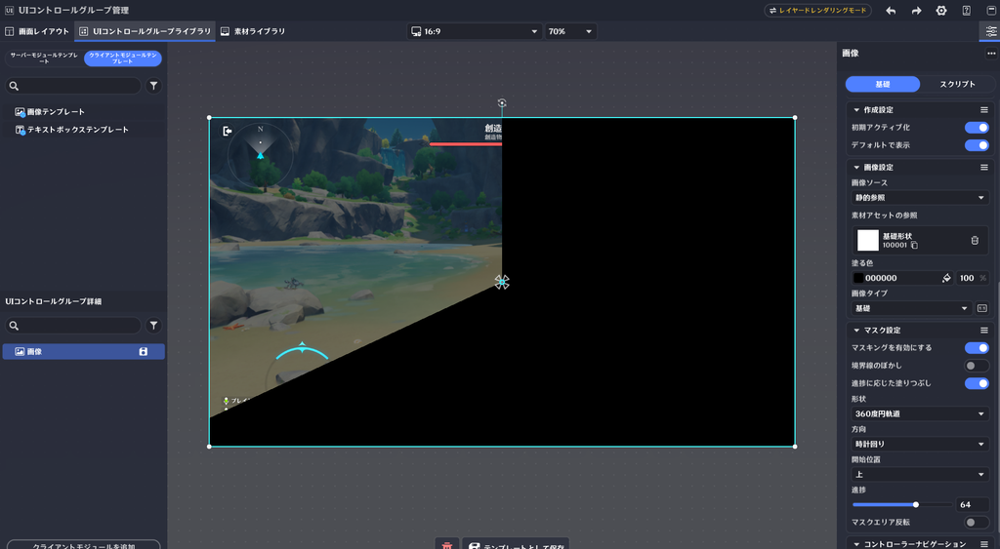
場面が切り替わる時に黒いスクリーンがクルクルするやつを作ってみようと思います。
マスク設定で360度円軌道で、進捗を動かすことでいい感じにできると思います。
Tweenアニメーションを作成します
※指定したオブジェクトのプロパティを一定時間かけて変化させます
※object:対象オブジェクト
※tweenDataTable:Tween可能なフィールド名をキーとし目標値を値としたテーブル
※duration:継続時間を引数にします
tweenDataTableを作ってみます。
進捗がTween可能なので、「fillAmount」をキーとします。
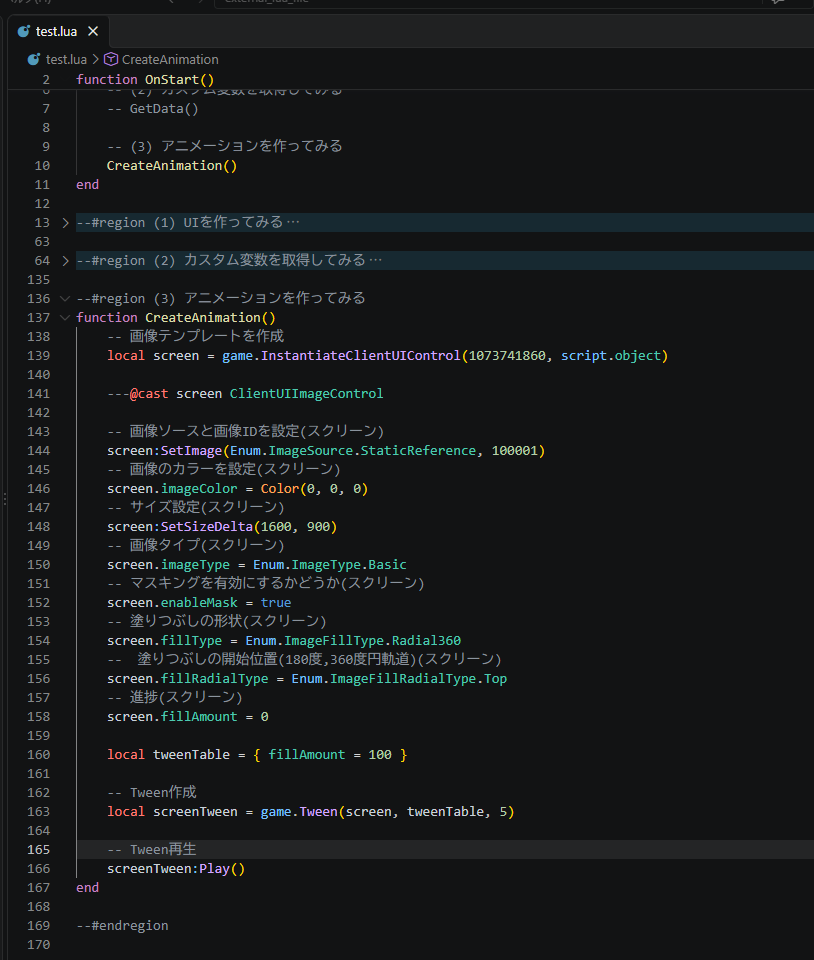
これで動かしてみましょう。
動いてはいそうですが、めちゃくちゃ爆速ですね。
5秒のつもりで設定していたのですが、そうではないようです。
5→100に変更してみました。
いい感じのスピードですね。
進捗が100になったら、黒いスクリーンが徐々に開けていくアニメーションを作成します。
マスクエリアを反転することで、やりたいことができると思います。
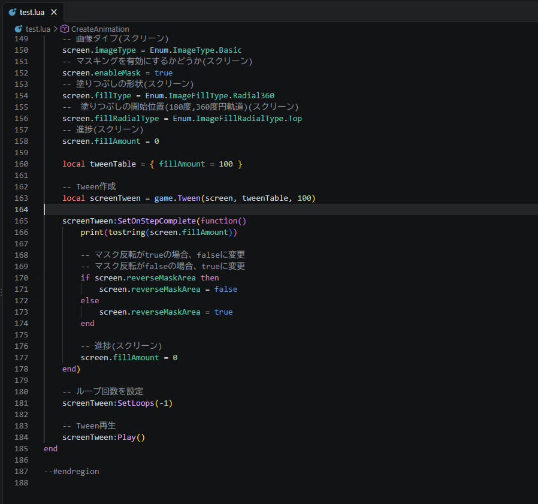
無限ループを設定し、ステップ完了時にマスク反転を反転することで黒くなって→明るくなってが繰り返し行われるようにしてみました。
動きませんね…
ログ出力にも出ていないので、そもそもループが完了していないみたいです。
あれこれ、動かしてみて100に変更した部分を5にしてみると、しばらくすると画面が開けました。
ということは、5秒であっていたのでしょうか。
問題の部分はループ部分ではなく、爆速でアニメーションが過ぎていくところなのかもしれません。
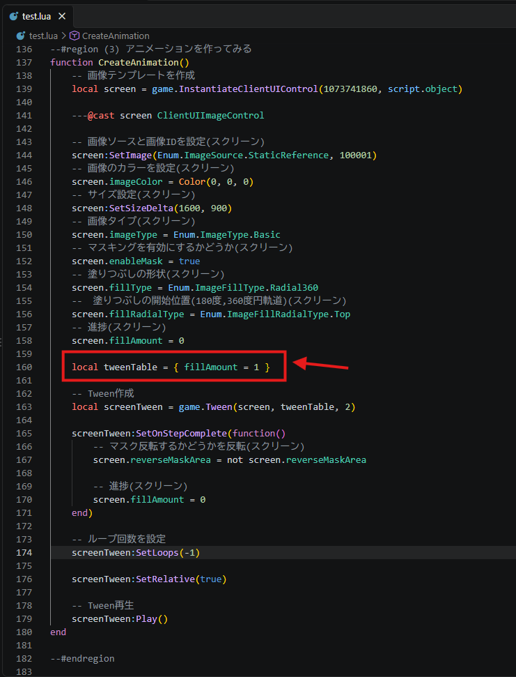
はい、というわけで原因がわかりました。
進捗に設定していた数値が問題でした。
※進捗は、0～100ではなく、0～1のようです。
ようやく思っていたものができました。
私が今回作成したアニメーションは非常にシンプルなものですが、凝りだせばもっと素敵なアニメーションが作れると思いますので皆さんも挑戦してみてくださいね。